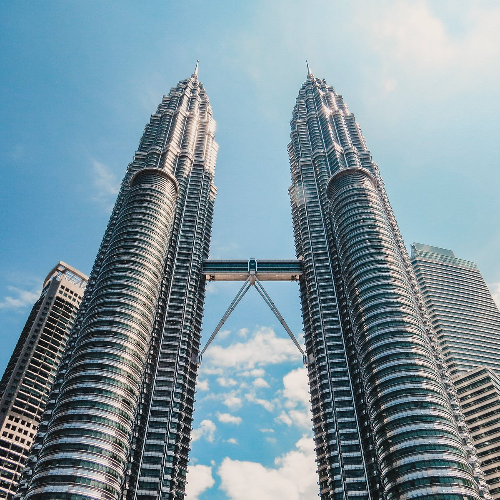
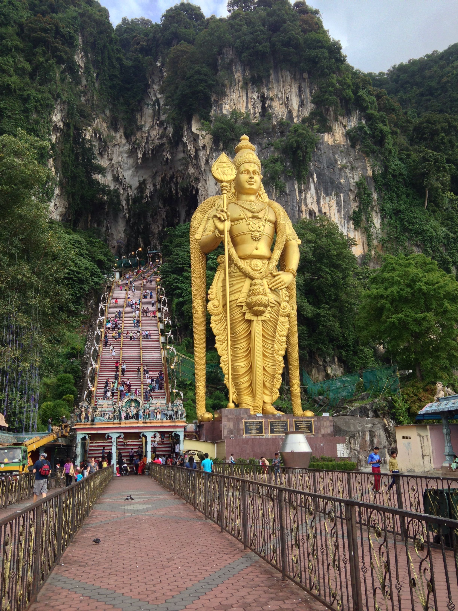
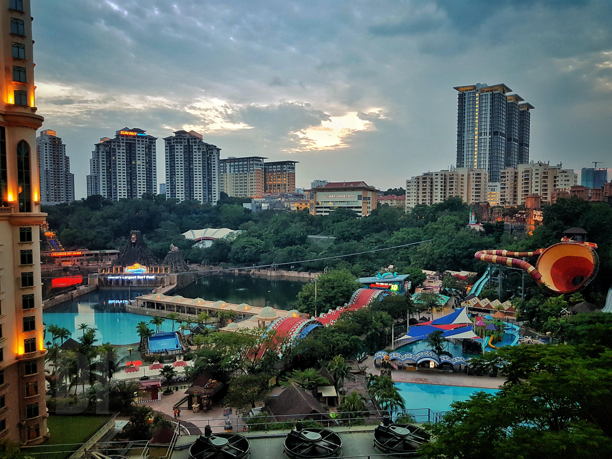
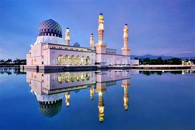
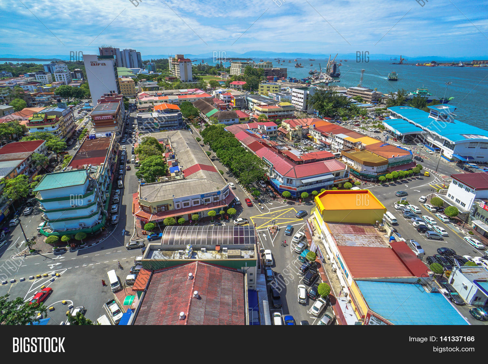
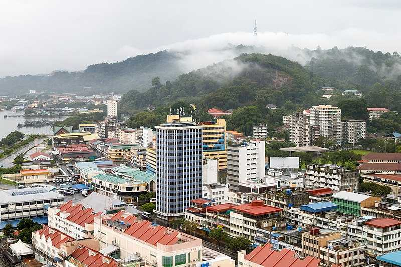
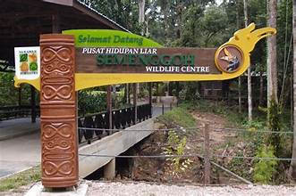
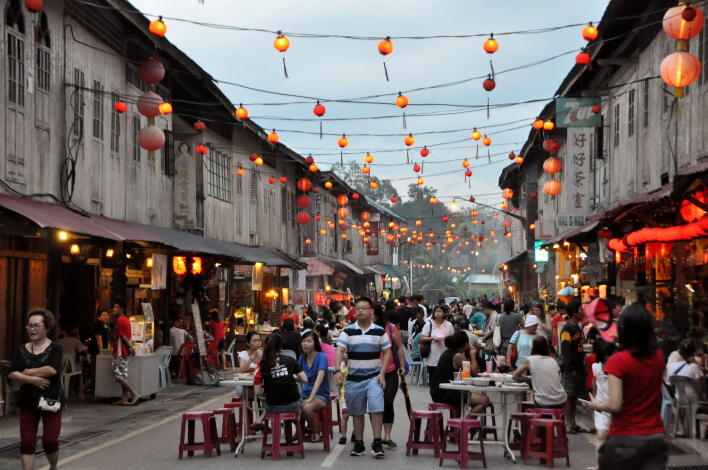

TOP TOURIST SPOT IN MALAYSIA
KUALA LUMPUR MALAYSIA
Petronas Twin Towers
The gleaming Petronas Twin Towers are a major landmark on the city skyline. Previously the tallest buildings in the world, they remain the tallest twin towers across the globe. Open since 1999. The towers were built on the site of the city’s racetrack. The steel and glass exteriors shimmer in the sunlight and the designs reflect those found in Islamic art. The 88-floor towers are connected by a skybridge walkway. Various companies have offices within the towers, with Tower One home only to Petronas, the large oil company. There’s a large shopping centre, Suria KLCC, at the bottom, and Petronas Philharmonic Hall is also within the buildings. Outside, KLCC Park is an attractive open space that offers various activities.

Batu Caves
The Batu Caves are easy to reach from the city centre, located in nearby Selangor. The limestone hill has several interesting caves and the complex is one of the most-visited and scared Tamil shrines outside of India. Dedicated to the Hindu deity Lord Murugan, a gigantic golden likeness of the god stands at the bottom of the biggest cave. Believed to have been formed some 400 million years ago, the caves have been used as shelters and as places of worship over the years. The caves have been especially sacred to local Hindus since the late 1800s. Each cave houses something different, with temple caves and one dedicated to nature. Macaque monkeys live around the hill.

Sunway Lagoon
The award-winning Sunway Lagoon, located in Selangor, has six excellent parks to please various interests and ages. Built on wasteland created by a former tin mine, the park has been open since 1992. Today, it’s a premier attraction for families, groups of friends, and couples, attracting locals and visitors alike. The Water Park is a top place to cool down in the hot and humid temperatures. The Scream Park (suitable for anyone over the age of seven years old) is sure to send a shiver down your spine!

SABAH MALAYSIA
Kota Kinabalu
Kota Kinabalu, commonly referred to as KK, is the capital of Sabah. The city lies on the fringes of the South China Sea and is home to the majestic Mount Kinabalu, after which it is named. Serviced by Kota Kinabalu International Airport, this city serves as the gateway to eastern Malaysia and particularly to Malaysian Borneo. While still being home to several historical sites, Kota Kinabalu is fast emerging as a modern tourist hub with fast emerging skyscrapers, trendy cafes and restaurants and tropical beachsides resorts and hotels.
Kota Kinabalu mainly hosts visitors for a tropical beachside experience. Resorts on or near the coastline are very popular among tourists, offering guests activities such as spas, cruises and watersports. Kota Kinabalu resort waterfront is an area replete with chic bars, cafes, and restaurants and even hosts a golf course. Away from the mainland are several islands, located within a short boat ride away, which are perfect for a day trip from the city. These islands also are home to premium resorts for those looking to stay over a night or two.
Within the confines of the city limits, tourists can indulge themselves in a lot of shopping, whether in the large luxury shopping malls or the traditional markets. In addition, Kota Kinabalu has several artisan markets to be explored, where visitors can browse through items to take back as souvenirs. Apart from shopping, there are art galleries, museums and a few historical sites standing to explore for a more traditional touristy experience.

Labuan
Located off-coast of Sabah, East Malaysia, Labuan is a duty free island and federal territory of Malaysia. The main island of Labuan and six other small islands together make up the Federal Territory of Labuan. These six smaller islands are Daat Island, Papan Island, Burung Island, Kuraman Island (alternatively called Keraman Island), Big Rusukan Island, and Small Rusukan Island. This Pearl Of Borneo, which is known for oil and gas, is also very popular for snorkeling and diving deep but remains to be one of the lesser-explored parts of Malaysia.
A duty-free shopping haven for shopaholics, people often purchse chocolates, cigarettes, alcohol, silk, stuffed turtles, leather bags, souvenirs and a lot more at cheap discounted prices in Labuan. Given the importance of its strategic location during World War 2, it comes as no surprise that this island has an interesting past.
Labuan has the world’s largest war grave that pays its respect to fallen soldiers of world war 2 in the form of the Labuan War Cemetery. The island is popular for its extravagance which lets you dive deep and witness four iconic shipwrecks namely the Cement wreck, the American wreck, the Australian wreck, and the Blue Water wreck. A few other memorials that give an essence of its past include the Royal Navy coaling station, the Chimney Museum, Peace Park, and the Labuan Maritime Museum.
Another very famous attraction in Labuan are its water villages. Labuan has two water villages, Kampung Bebuloh and Kampung Patau-Patau. The houses in these water villages are built with high stilts and only woods, with wooden walkways that connect every house. These villages also have seafood restaurants and the residents are warm enough to offer you delicious local food as well.
Activities like snorkeling at Big Rusukan Island (Pulau Rusukan Besar), watching birds at a hand's distance at the Labuan Bird Park, catching the hues of yellow, red, and orange during sunsets at Pulau Papan Island, and a laid back lifestyle makes Labuan truly worth a visit!

Sandakan
Sandakan, also known as Elopura, is the capital of the Sandakan district in Sabah, Malaysia. It also the largest town in Sabah after Kota Kinabalu. Located on the Sandakan Peninsula, northeastern of Sabah, it is well known for its main ports that export goods of prime importance all around the world like oil, tobacco, coffee, and timber. People visit Sandakan for its untouched nature, abundance of rainforests, and the diverse wildlife.
Also known as Little Hong Kong, Sandakan offers a delicious blend of Cantonese cuisine and fresh Seafood. Some of the must try delicacies when in Sandakan include - seafood noodle, kuey teow with deep-fried pork, spring noodles, thin crust egg tarts, Bak Ku Teh, Leong Fun Bing (Grass Jelly Milk Tea), etc.The attractions in Sandakan pay homage to its history. Notable historical attractions in Sandakan include Sandakan Heritage Museum which is located at the Lebuh Empat Road, the Agnes Keith House at the top of the hill near the Istana Street, Japanese Bunker, Mill Hill Dam, and many more.
Another unique attraction in Sandakan is the Malaysian Turtle Islands which is a group of 3 islands - Selingaan, Little Bakkungan, and Gulisaan, where one can enjoy water sports like diving, snorkeling, and swimming. It is popular for its sightings of green turtles and hawksbill turtles. The Gomantong Caves is yet another popular attraction to enjoy nature. One can easily spot swifts and bats that inhabit the caves. An amalgamation of nature, wildlife, and history, at its best, Sandakan is a hidden gem and truly justifies why it is nicknamed the Nature City!

SARAWAK MALAYSIA
Semenggoh Nature Reserve
One of the top Sarawak attractions that you should check out is the Semenggoh Nature Reserve, located around 20km from Kuching, the capital of Sarawak. Established in 1975, this centre serves as a sanctuary for orangutans who are injured, orphaned or had been kept captive as illegal pets. Apart from the opportunity to see orang utans up close, you will also get to see many rare flora and fauna.

Fairy Cave
Fairy Cave, a beautiful limestone cave that is located around 40km away from the capital of Sarawak, Kuching. To get to the entrance of this cave, you will first need to go up the four storey concrete staircase. While the entrance of the cave is slightly narrow, it will open up to a massive area with a big opening on the top which allows the sunlight to shine in.

Siniawan Night Market
Siniawan Night Market is open every Friday, Saturday and Sunday, and is a wonderful place for you to enjoy the evening. The street is lined with wooden shophouses that are decorated with lanterns, lighting up the streets at night. There is so much food waiting to be discovered here as the locals take pride in whipping up cultural dishes for the visitors to try.

BACK